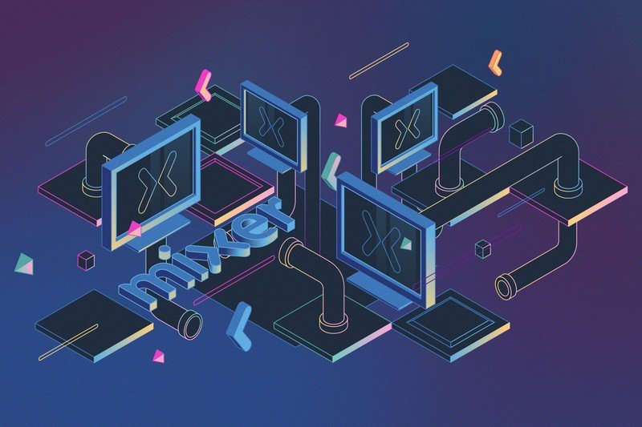

The rise and fall of Mixer
With every passing day, Mixer’s untimely end creeps closer. Just last month, without any warning whatsoever, Microsoft announced it was going to close down its streaming platform, leaving its content creators to find new homes for their burgeoning audiences. The news was unexpected, and will seldom be remembered in the year of 2020, but for the here and now, its ripples are still being felt by the industry as a whole.
The platform was launched by Matthew Salsamendi and James Boehm in 2016 under the name Beam, but it wasn’t long before the service transformed into what we know today. Seven months later, in August 2016, Microsoft bought the platform and renamed it Mixer a year later. There it was brought into the Xbox fold, where aspirations of securing some of the biggest streamers in the world were quickly dreamt up.
The team were successful too. Just last year, Mixer managed to lure Tyler ‘Ninja‘ Blevins and Michael ‘shroud‘ Grzesiek to name but a few, and while the platform did see some growth as a result, it wasn’t enough. Mixer closed due to the slow scaling of its operations, but the news came just days after allegations of racism towards a member of senior management from former employee Milan Lee. The platform’s story should end there, but it doesn’t. It lives on with the streamers who found out from a single Twitter post that their entire world had been shattered.
In an attempt to sweeten the deal with its streamers, Microsoft worked with Facebook Gaming to come up with an alternative agreement. Mixer partners could, if they wanted to, opt to move over to Mark Zuckerberg’s platform and be fast tracked for partnership. They’d also be offered a cash bonus to transition too. But many streamers chose not to take up the deal, citing privacy and the platform’s non-disclosure agreement as some of the reasons why.
Ninja and Shroud were also courted by Facebook Gaming, with reports suggesting they were both offered double the sum of their Mixer contracts, but they turned them down. Like many former Mixer streamers, the pair are still deciding on which platform to make their home.